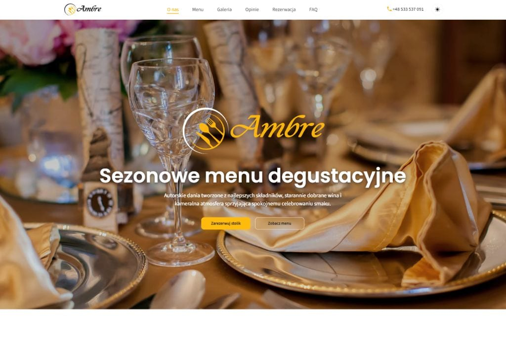

01
Ambre
Koncept strony restauracji premium, w którym estetyka, oferta i prowadzenie użytkownika do rezerwacji tworzą spójną, elegancką całość.
Przegląd projektu
Ambre zostało zaprojektowane jako restauracyjna strona premium, która buduje atmosferę marki i jednocześnie zachowuje pełną czytelność oferty.
Projekt łączy mocny kierunek wizualny z uporządkowaną architekturą treści, dzięki czemu komunikacja nie traci elegancji nawet przy większej liczbie sekcji.
W tego typu projektach równie ważny jak sam wygląd jest rytm prezentacji treści. Ambre prowadzi użytkownika przez doświadczenie marki, menu, kluczowe informacje i ścieżki kontaktowe w sposób spokojny, premium i przewidywalny.
To rozwijany koncept portfolio, który pokazuje podejście do branży gastronomicznej oparte na estetyce, wyczuciu detalu i gotowości do dalszej rozbudowy o kolejne sekcje lub funkcje.
Strony
Biznes
Gastronomia
Premium
Zakres i akcenty
Projekt skupia się na tym, aby luksusowy charakter marki był widoczny bez utraty funkcjonalności i jasnego przekazu.
02
Czytelna prezentacja oferty
03
Gotowość na rozwój
Technologie i standard
Założenia techniczne wspierają płynne działanie strony i pełną kontrolę nad detalem wizualnym.
Projekt korzysta z lekkiej, statycznej architektury frontendowej. To podejście pozwala skupić się na jakości prezentacji marki, wydajności oraz czytelnej strukturze wdrożenia bez nadmiarowych zależności.
- semantyczna struktura treści wspierająca SEO i dostępność,
- responsywny układ dopasowany do urządzeń mobilnych,
- sekcje gotowe do dalszej edycji i rozwoju w ramach portfolio.
Prezentacja wizualna
Widok projektu pokazuje restauracyjny kierunek premium z naciskiem na atmosferę i spokojny rytm prezentacji treści.

Dalszy krok
Sprawdź wersję live projektu albo wróć do pełnego zestawu realizacji.
Detail page porządkuje najważniejsze założenia i tworzy spójny szablon dla kolejnych case studies w portfolio.